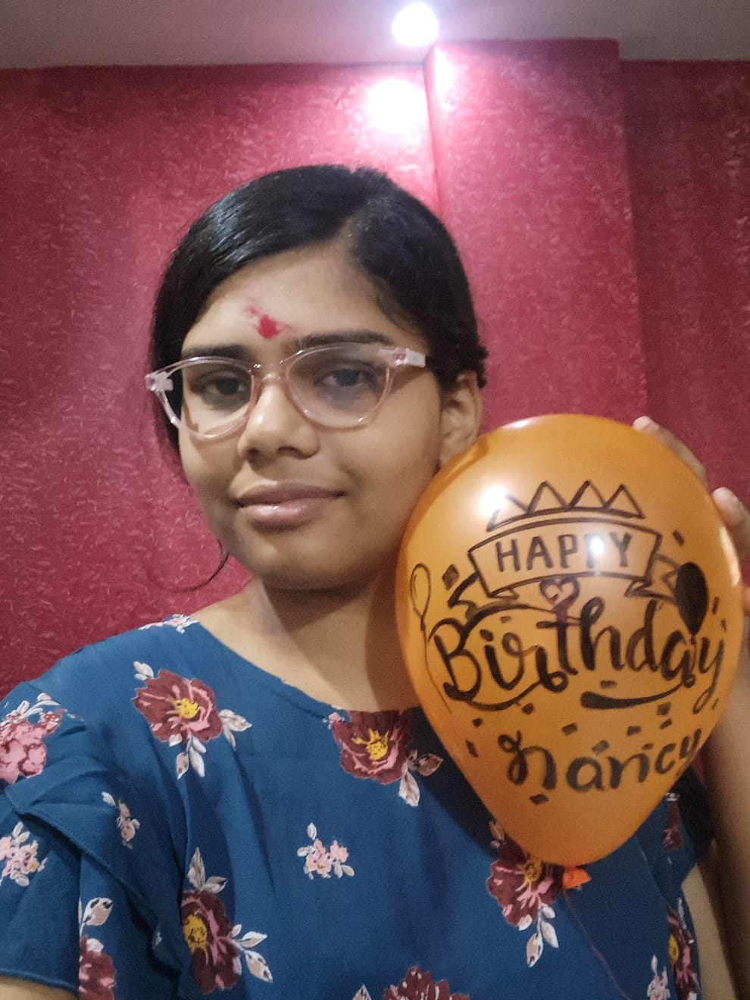

Atul Singh
Electronics · Systems · Programming
| Asset | Status | Altitude | Velocity | Signal | Health |
|---|
Real-time IoT parking system built using ESP32, Firebase and a live web dashboard. Displays slot availability dynamically with cloud integration.
I build systems where electronics and code work together.
I work with C and C++ for embedded systems and microcontrollers, and I'm exploring Python to strengthen problem-solving and automation skills.
I enjoy hands-on learning — writing code, testing it on hardware, debugging, and improving systems step by step.
Outside of tech, I enjoy playing cricket and badminton.
🔐 AtulOS Terminal — Authentication Required
Theme
Accent Color
Voice Output
Wake Word Engine
System Info
